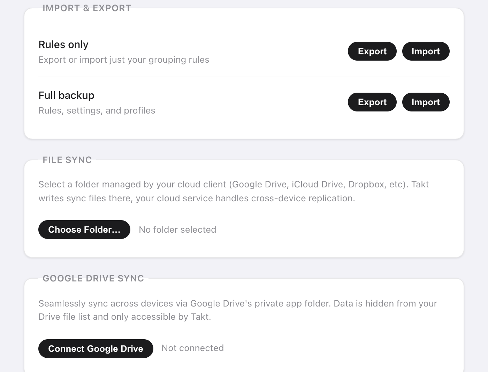

Resposta curta: abra a página de opções do Takt, vá em Settings e escolha uma opção:
- Exporte um arquivo JSON: só as regras, ou um backup completo.
- File Sync: o Takt grava numa pasta que o Google Drive, o Dropbox ou o iCloud Drive sincroniza por você.
- Drive Sync: o Takt sincroniza com uma pasta de app oculta no seu Google Drive, a cada 15 minutos.
As três são Premium. Nenhuma delas envia seus dados para um servidor do Takt.
Por que meus grupos de abas do Chrome não sincronizam?
A sincronização de grupos de abas do próprio Chrome confunde muita gente. Duas coisas costumam atrapalhar:
- Ela precisa da opção "Saved tab groups" ativada nas configurações de sincronização de cada dispositivo.
- Um grupo sincronizado vai parar na barra de favoritos. Ele não abre sozinho.
Se você só quer alguns grupos num segundo computador, confira essa configuração primeiro. É gratuita e já vem no Chrome.
O Takt resolve outro problema. Ele não sincroniza suas abas abertas ao vivo. Ele sincroniza a configuração por trás delas: suas regras, perfis, sessões salvas e abas hibernadas. Suas regras recriam os mesmos grupos em cada computador enquanto você navega. Uma sessão salva reabre um espaço de trabalho inteiro quando você pede.
Como faço backup das minhas abas e regras num arquivo?
Em Settings → Import & Export há duas linhas:
| Opção | Arquivo | Contém |
|---|---|---|
| Rules only | takt-rules.json | Suas regras de agrupamento |
| Full backup | takt-backup.json | Regras, configurações, perfis, sessões salvas e abas hibernadas |
Use Rules only para compartilhar um conjunto de regras com um colega. Use Full backup antes de reinstalar o Chrome ou de mudar de computador.
Na importação, os arquivos têm limite de 5 MB. As regras e as sessões são adicionadas ao lado das que você já tem, e as que têm um nome que você já usa são ignoradas. Um backup completo também substitui suas configurações e perfis pelos do arquivo.

Como sincronizo pelo Dropbox, pelo iCloud ou por uma pasta do Google Drive?
Use o File Sync. O Takt grava arquivos JSON simples numa pasta que você escolhe. Seu cliente de nuvem os envia como qualquer outro arquivo.
- Clique em Choose Folder… e escolha uma pasta dentro da sua pasta do Drive, do Dropbox ou do iCloud Drive, por exemplo
Dropbox/Takt/. - Clique em Sync Now. O Takt grava
rules.json,profiles.json,sessions.json,hibernated.jsonemeta.json. - Marque Auto-sync on every change para regravar os arquivos cerca de 2 segundos depois da sua última alteração.
- No outro computador, clique em Import from Folder e escolha a mesma pasta sincronizada.
Sem login, e você pode abrir os arquivos e lê-los. Funciona com qualquer serviço de nuvem que tenha uma pasta no computador.
A contrapartida: é de mão única em cada computador. Cada computador grava a sua própria cópia, e você traz os dados de outro computador com Import from Folder. Se o Chrome perder o acesso à pasta, o Takt mostra um botão Re-authorize.
Como funciona a sincronização com o Google Drive?
Clique em Connect Google Drive e faça login uma vez. O Takt guarda seus arquivos na pasta de app oculta do Drive. Ela fica separada dos seus arquivos do Drive e não aparece na interface do Drive.
O Takt pede ao Google só duas permissões:
- Dados de app do Drive: ler e gravar uma pasta que só o Takt vê. Ele não consegue listar nem abrir seus outros arquivos.
- Endereço de e-mail: para mostrar qual conta está conectada.
Marque Auto-sync every 15 minutes e o Takt sincroniza em segundo plano. Num computador novo, conecte a mesma conta e clique em Force Pull para substituir as regras, os perfis e as sessões dele pela cópia que está no Drive. Force Push faz o contrário e sobrescreve o Drive. Os dois são imediatos e não podem ser desfeitos de dentro do Takt.
Qual método devo usar?
| Sincronização de grupos de abas do Chrome | Exportação JSON | File Sync | Drive Sync | |
|---|---|---|---|---|
| O que vai junto | Grupos de abas salvos | Regras, ou um backup completo | Regras, perfis, sessões, abas hibernadas | Regras, perfis, sessões, abas hibernadas, configurações de hibernação |
| Automático | Sim | Não | Gravação sim, importação à mão | A cada 15 minutos |
| Nuvem | Sua conta do Google | Nenhuma | Qualquer pasta sincronizada no computador | Só Google Drive |
| Custo | Grátis | Premium | Premium | Premium |
Mais um detalhe: o Takt guarda as regras, as configurações e os perfis no armazenamento sincronizado do Chrome, que acompanha a sua conta do Chrome quando a sincronização do Chrome está ativada. As sessões e as abas hibernadas ficam só no computador, então precisam de um dos métodos acima.
O que o backup e a sincronização não fazem
- Sem espelhamento de abas ao vivo. As abas abertas num computador não aparecem no outro. Salve uma sessão e restaure-a lá.
- Vale a última gravação. Não há mesclagem de alterações feitas em dois computadores ao mesmo tempo. Escolha um computador para editar, ou envie e traga os dados de propósito.
- O Drive Sync é só para o Google. Use o File Sync para Dropbox, iCloud ou qualquer outro.
Configure uma vez. Leve para todos os computadores.
Adicionar o Takt ao Chrome, grátisPerguntas frequentes
Por que meus grupos de abas do Chrome não sincronizam?
O Chrome precisa da opção "Saved tab groups" ativada nas configurações de sincronização de cada dispositivo, e os grupos sincronizados aparecem na barra de favoritos em vez de abrirem sozinhos.
O Takt sincroniza minhas abas abertas ao vivo entre computadores?
Não. Ele sincroniza suas regras, perfis, sessões salvas e abas hibernadas. As regras recriam os mesmos grupos em cada computador, e uma sessão salva reabre um espaço de trabalho inteiro.
O Takt consegue ler meus arquivos do Google Drive?
Não. O Drive Sync usa só o escopo de dados de app, uma pasta oculta que só o Takt vê, mais o seu e-mail para mostrar a conta conectada. Veja como o Takt mantém os dados no seu computador.
Backup e sincronização são gratuitos?
Não. Exportação e importação em JSON, File Sync e Drive Sync são Premium, US$ 3/mês ou US$ 30/ano.